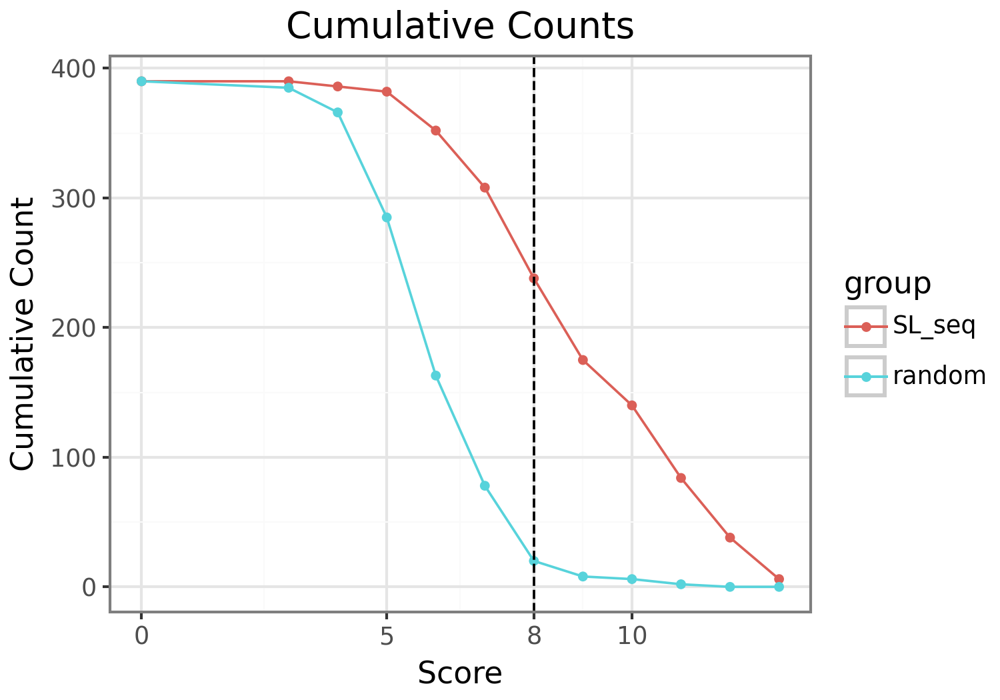
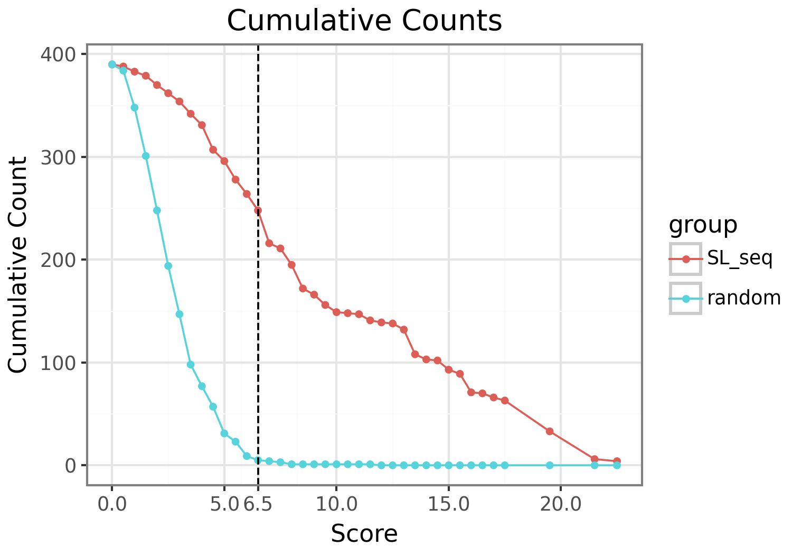
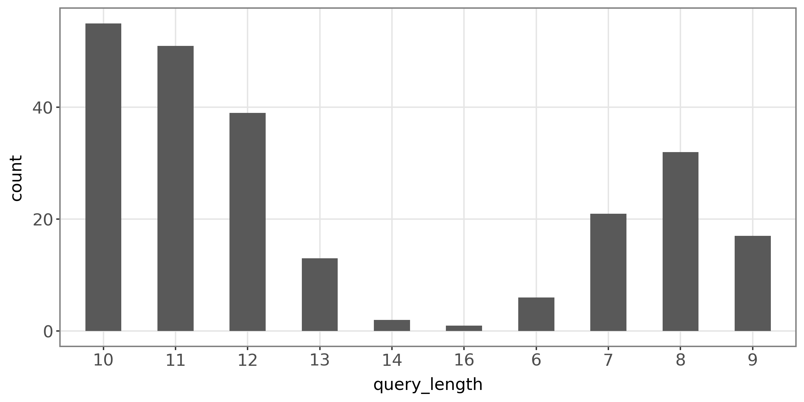
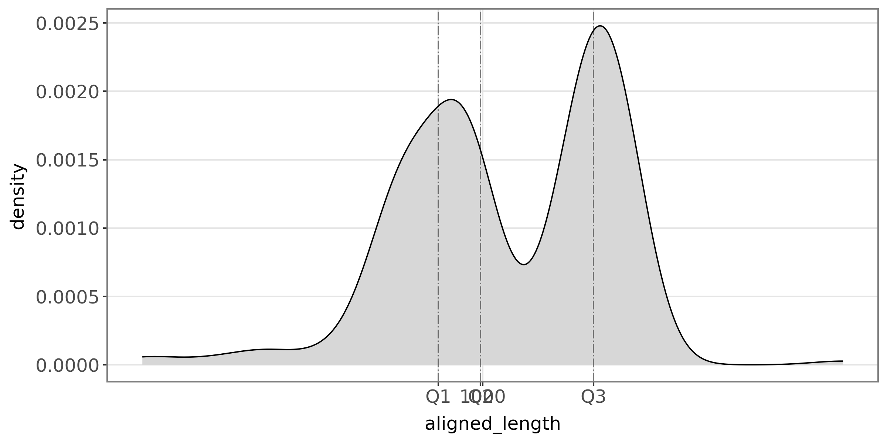
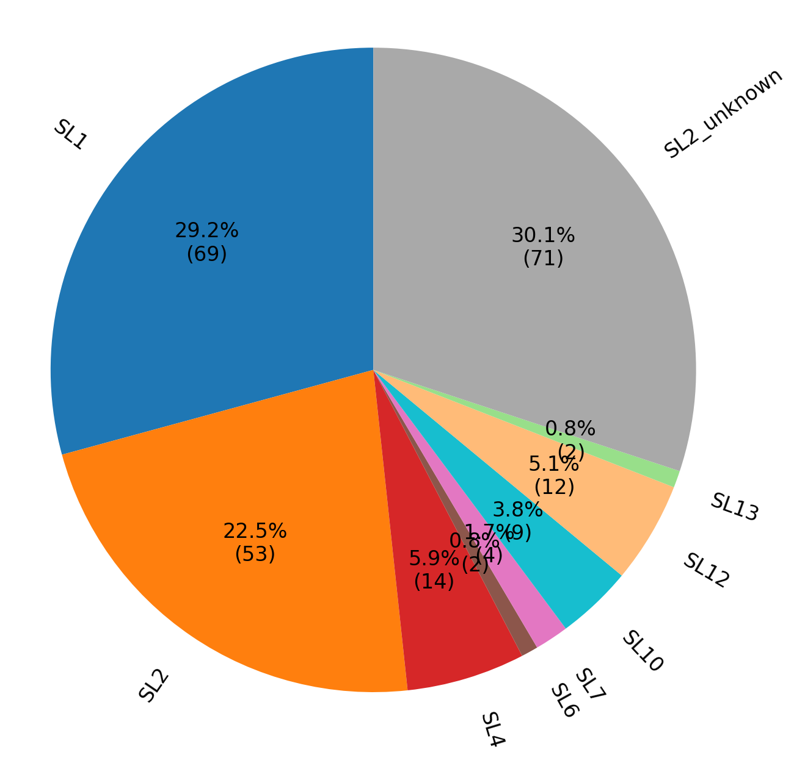

This document contains the visualization results from the SLRanger.
| Variable | Read Count | Proportion to total reads (%) | Proportion to Candidate reads (%) | Proportion to Potential reads (%) | Proportion to SLRanger Solid SL reads (%) |
|---|---|---|---|---|---|
| Total | 456 | / | / | / | / |
| Candidate | 390 | 85.53 | / | / | / |
| Potential SL | 365 | 80.04 | 93.59 | / | / |
| SW Solid SL | 234 | 51.32 | 60.0 | 64.11 | 99.15 |
| SLRanger Solid SL | 236 | 51.75 | 60.51 | 64.66 | / |
| SL1 | 69 | 15.13 | 17.69 | 18.9 | 29.24 |
| SL2 | 53 | 11.62 | 13.59 | 14.52 | 22.46 |
| SL4 | 14 | 3.07 | 3.59 | 3.84 | 5.93 |
| SL6 | 2 | 0.44 | 0.51 | 0.55 | 0.85 |
| SL7 | 4 | 0.88 | 1.03 | 1.1 | 1.69 |
| SL10 | 9 | 1.97 | 2.31 | 2.47 | 3.81 |
| SL12 | 12 | 2.63 | 3.08 | 3.29 | 5.08 |
| SL13 | 2 | 0.44 | 0.51 | 0.55 | 0.85 |
| SL2_unknown | 71 | 15.57 | 18.21 | 19.45 | 30.08 |





*Generated on 2025-04-02 11:23:27. If you think this tool is pretty cool, don’t forget to give our Git a star! *